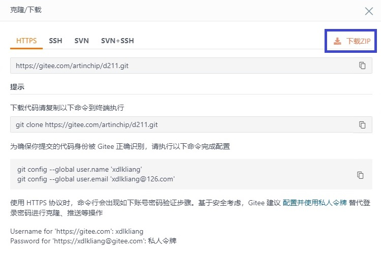

准备代码
15 Jan 2024
Luban SDK 的代码托管于 Gitee 服务器中，为开源代码。本节描述了如何从对应的仓库地址中下载源代码。
Git
推荐通过 Git
用户端下载代码，可以实时关注服务器补丁和版本的发布：
git clone https://gitee.com/artinchip/d211.gitHTTP
通过网络下载的方式可直接下载压缩包，详细步骤如下：
-
在 Gitee 上打开 Luban 仓库，地址为 https://gitee.com/artinchip/luban。
-
在仓库主界面点击克隆/下载按钮。
-
在克隆/下载界面选择下载 ZIP。
